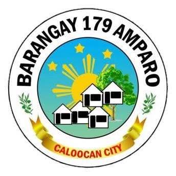
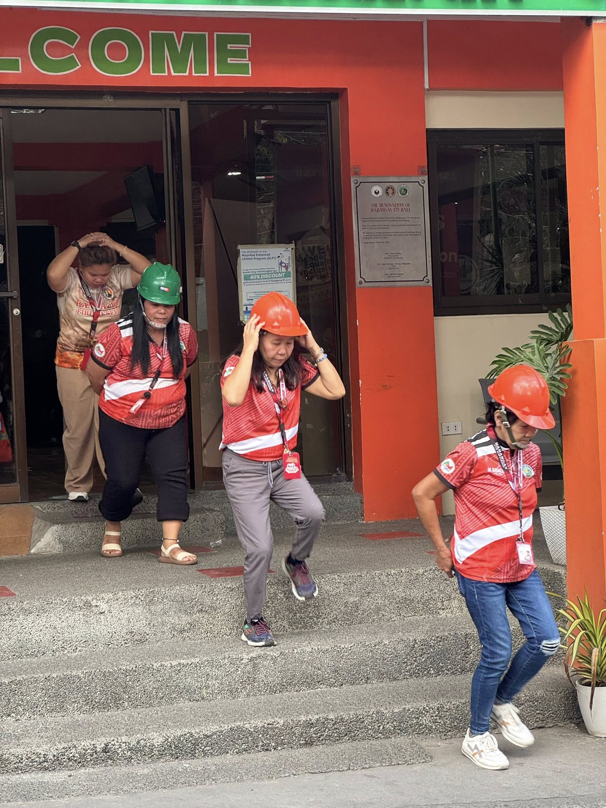
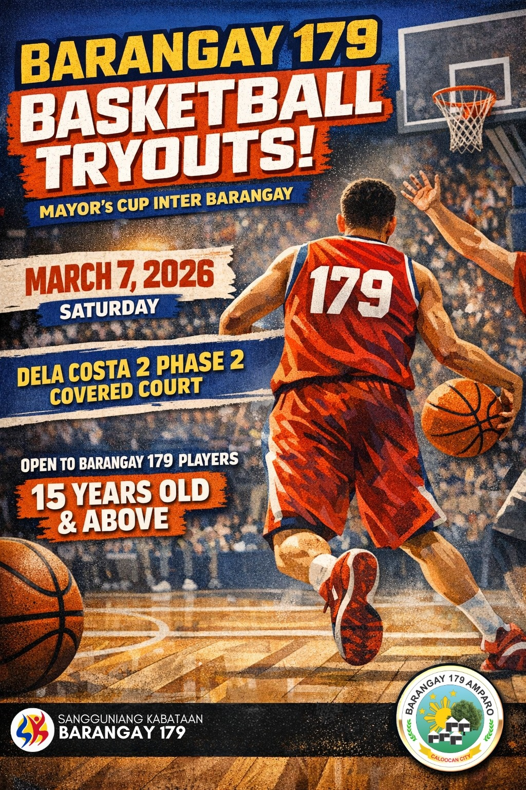

CITY OF CALOOCAN

March 13, 2026
Nakiisa ang Barangay 179 sa isinagawang Nationwide Simultaneous Earthquake Drill (NSED) bilang bahagi ng patuloy na paghahanda at pagpapalakas ng kakayahan ng komunidad sa pagtugon sa mga sakuna. Isinagawa ang aktibidad sa pakikipagtulungan ng Kankaloo FIRE Rescue Eagles at ng Bureau of Fire Protection – Amparo Fire Substation upang sanayin ang mga kalahok sa tamang “Duck, Cover, and Hold” at sa wastong paglikas sakaling magkaroon ng lindol. Layunin ng ganitong mga gawain na mapalakas ang kahandaan ng bawat mamamayan at mapanatili ang kaligtasan ng buong komunidad sa oras ng sakuna. Sama-sama tungo sa mas handa at mas ligtas na Barangay 179.
March,7 2026
𝐩𝐢𝐧𝐚𝐩𝐚𝐭𝐚𝐰𝐚𝐠 𝐤𝐚𝐲𝐨 𝐧𝐢 𝐊𝐮𝐲𝐚 𝐬𝐚 𝐂𝐨𝐧𝐟𝐞𝐫𝐞𝐧𝐜𝐞 𝐑𝐨𝐨𝐦. Pero hindi lang SK ang pwede dito — bukas din ito para sa mga 𝐫𝐞𝐬𝐢𝐝𝐞𝐧𝐭𝐞 𝐧𝐠 𝐁𝐚𝐫𝐚𝐧𝐠𝐚𝐲 𝟏𝟕𝟗 para sa 𝐦𝐞𝐞𝐭𝐢𝐧𝐠𝐬, 𝐩𝐥𝐚𝐧𝐧𝐢𝐧𝐠, 𝐚𝐭 𝐜𝐨𝐦𝐦𝐮𝐧𝐢𝐭𝐲 𝐝𝐢𝐬𝐜𝐮𝐬𝐬𝐢𝐨𝐧𝐬. Handa na ba kayo? Tara na 𝐒𝐊 𝟏𝟕𝟗 𝐂𝐨𝐧𝐟𝐞𝐫𝐞𝐧𝐜𝐞 𝐑𝐨𝐨𝐦! 𝐑𝐞𝐬𝐞𝐫𝐯𝐞 𝐲𝐨𝐮𝐫 𝐬𝐥𝐨𝐭𝐬 𝐡𝐞𝐫𝐞

March,7 2026
Calling all aspiring basketball players from Barangay 179! Show us your skills and be
part of the team for the Mayor’s Cup Inter-Barangay.
📍 Venue: Dela Costa 2 Phase 2 Covered Court
📅 Date: March 7, 2026 (Saturday)
⏰ Time: 3:00 PM – 6:00 PM
👥 Who can join: Barangay 179 residents
🎂 Age: 15 years old and above
Bring your A-game and prove you have what it takes to represent our barangay!
S ee you on the court! 💪🔥